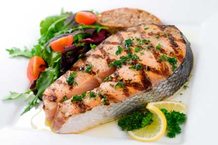

There are many good reasons to add fish, such as salmon, trout andherring, to your diet. Recent nutrition research confirmed thebenefits of eating oily fish, which are loaded with omega-3 fattyacids. Omega-3s are proven to boost brainpower and reduce the riskof heart disease and stroke. Eating fish may also improve eyehealth, reduce the risk of colon cancer and have therapeuticeffects for people suffering from depression and arthritis.
But we're also hearing warnings against eating fish, specificallydirecting pregnant women and young children to avoid fish high inmercury. And we read reports about the problems of overharvestingwild fish species and the water pollution caused by some commercialfish farms.
But many aquaculturists operate responsibly, and you can eat thefish from these farms without sacrificing your health or that ofthe planet. While there's a lot to keep in mind when selectingfish, you can find healthy, sustainably harvested fish in a varietyof price ranges.
Download aSustainableSeafood Shopping Guide from the Real Food Page onMotherEarthNews.com to learn more about choosing healthy,sustainable fish. Or visitOceans Alive orSeafoodWatch.
|
 |
|
|